1 ¿Qué son los E-Sports? Los deportes electrónicos, o E-Sports, se constituyen como una industria que combina el mundo de los videojuegos con la competición profesional. La revolución de las nuevas tecnologías muestra desde hace tiempo un gran impacto sobre la sociedad y la economía dando lugar a importantes modificaciones en numerosos modelos de negocios tradicionales, así como en la aparición de nuevas industrias, como es el caso de la industria de los videojuegos. Este sector cada vez tiene mayor potencial industrial y es uno de los sectores tecnológicos con mayor proyección de crecimiento. Inicialmente los videojuegos empezaron como un hobby individual que se practicaba en el salón de casa con una videoconsola, con la mejora de las telecomunicaciones, su forma de juego se transformó a ser una experiencia comunitaria, con partidas entre usuarios y grupales. El crecimiento de esta industria de ocio ha sido exponencial, desbancando a otras industrias de ocio que eran hegemónicas en décadas pasadas. La industria del videojuego se ha convertido en la reina entre todas las industrias del ocio constituyéndose hoy en día en referente de la economía digital. En torno a esta industria han surgido puestos de trabajo específicos con un alto grado de profesionalización. Como una industria derivada de la de los videojuegos, surge un negocio basado en éstos y que incorpora competiciones y retrasmisiones de dichos eventos, al más puro estilo de competiciones deportivas, que se presentan tanto como ligas nacionales o internacionales y que se han convertido en un fenómeno cultural que atrae a millones de espectadores y participantes en todo el mundo, conviertiéndose en un negocio en constante crecimiento. 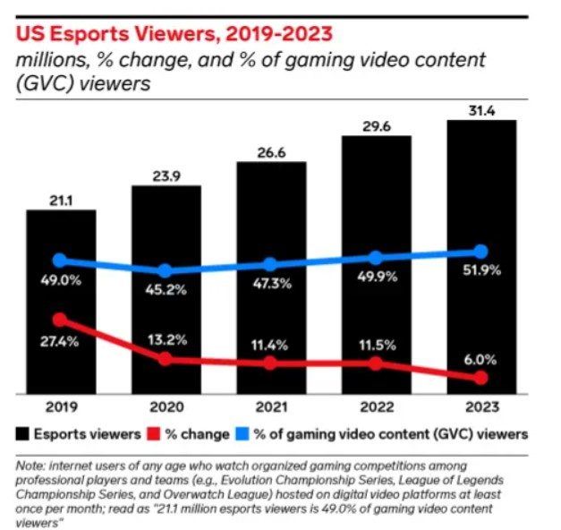 Evolución de espectadores E-Sports en EE.UU. Fuente:eMarketer. No todos los videojuegos se pueden considerar e-sports, para que así lo sean, tienen que cumplir una serie de condiciones específicas: El juego permite el enfrentamiento directo entre dos o más participantes. Los jugadores compiten en igualdad de condiciones, siendo la victoria exclusivamente determinada por la habilidad de estos. Existen ligas y competiciones oficiales reguladas con reglas y formadas por equipos y jugadores profesionales. Goza de popularidad y seguimiento en sus retrasmisiones. 1.1 Historia Aunque los videojuegos nacen a finales de la década de los 70 prácticamente a la par que los primeros ordenadores, hay que esperar hasta principios de la década de los 90 cuando empiezan a surgir las primeras competiciones en forma de torneos locales y en las que los jugadores empiezan a competir por premios en efectivo y reconocimiento. A medida que la tecnología y la conectividad en línea avanzaban, los E-sports se expandieron a nivel global, con juegos como "Quake" y "Counter-Strike" definiendo el género de los juegos de disparos en primera persona Quake(FPS) y atrayendo a comunidades competitivas. La década de 2000 presenció un aumento constante en la profesionalización de los E-sports. Se establecieron ligas y organizaciones formales, y juegos como "Warcraft III" y "StarCraft" se convirtieron en fenómenos competitivos en Asia, particularmente en Corea del Sur. La aparición de plataformas de transmisión en línea permitió que las competiciones fueran accesibles para una audiencia global, sentando las bases para el auge de los E-sports en la década siguiente. Con el advenimiento de juegos como "League of Legends", "Dota 2" y "Overwatch", los E-sports experimentaron un crecimiento explosivo en la década de 2010. Los premios en efectivo aumentaron significativamente, y los eventos en vivo atraían a multitud de espectadores. Grandes marcas y patrocinadores comenzaron a invertir en los E-sports, y los jugadores se convirtieron en celebridades en la comunidad de los juegos. Hoy en día, los E-sports son una industria multimillonaria, con torneos de gran envergadura, ligas profesionales y equipos reconocidos internacionalmente, consolidando su lugar como una forma legítima y emocionante de competición y entretenimiento en el mundo digital. 1.2 Tipos de juegos Aunque el mundo de los videojuegos lanza millares de juegos al año, son pocos los que se convierten, por sus características, objeto de competiciones formando parte del universo E-Sports. En general, se pueden agrupar dentro de las siguientes clases: FPS (First Psrson Shooting) Disparos en primera persona: Juegos en los que los jugadores controlan un personaje desde una perspectiva en primera persona y se centran en la acción de disparar armas de fuego. Ejemplos: Counter-Strike: Globsal Offensive, Call of Duty, Overwatch. MOBA (Arte de la Batalla en Línea Multijugador): Juegos de estrategia en tiempo real en los que dos equipos compiten para destruir la base del oponente. Los jugadores controlan héroes con habilidades únicas. Ejemplos: League of Legends, Dota 2, Heroes of the Storm Juegos de lucha: Juegos en los que los jugadores controlan personajes con habilidades de lucha en combates uno contra uno o en equipo. Ejemplos: Street Fighter, Super Smash Bros., Tekken. RTS: Juegos de estrategia en tiempo real. Juegos en los que los jugadores gestionan recursos y ejércitos para derrotar a sus oponentes. Ejemplos: StarCraft II, Age of Empires, Warcraft III. Battle Royale: Juegos en los que un gran número de jugadores se enfrentan en un entorno de supervivencia hasta que quede un último jugador o equipo en pie. Ejemplos: Fortnite, PlayerUnknown's Battlegrounds (PUBG), Apex Legends. Juegos de deportes: Simulaciones de deportes tradicionales como fútbol, baloncesto, carreras, etc., adaptados a entornos virtuales. Ejemplos: FIFA, NBA 2K, Rocket League. 1.3 Ingresos La principal fuente de ingresos en el negocio de los e-sports proviene de patrocinios y acuerdos de colaboración con marcas. Empresas de tecnología, alimentación, ropa, etc han invertido considerablemente en patrocinar equipos, jugadores y eventos, aprovechando la exposición a la audiencia global que los e-sports ofrecen. Además, los derechos de transmisión y los contratos de medios representan otra fuente significativa de ingresos, con plataformas de streaming y televisión que adquieren los derechos para transmitir en vivo los torneos. La venta de entradas para eventos presenciales y la organización de torneos también contribuyen al negocio de los e-sports. Grandes arenas y estadios se llenan de fanáticos para presenciar en vivo las emocionantes competencias, creando una atmósfera similar a la de los deportes tradicionales. Además, los ingresos por publicidad y mercancía, como camisetas y artículos temáticos, complementan las ganancias de la industria. La inversión en infraestructura y tecnología es esencial para mantener la competitividad en el negocio de los e-sports. Los equipos y jugadores requieren equipos de alta calidad, instalaciones de entrenamiento y asesoramiento técnico para mantener su rendimiento óptimo. Además, las ligas y organizaciones deben garantizar una experiencia de transmisión en línea de alta calidad para satisfacer las expectativas de los espectadores. 1.4 Equipos deportivos Los atletas de los deportes electrónicos mantienen rigurosas rutinas de entrenamiento. A su disposición suelen contar con una infraestructura elaborada que incluye entrenadores, analistas e incluso psicólogos deportivos. Además de la preparación mental, mantener su forma física es esencial para lograr un rendimiento sobresaliente en las partidas. Por esta misma razón, muchos siguen regímenes alimenticios saludables y acuden al gimnasio. Los clubes deportivos convencionales y hasta las grandes competiciones como La Liga española ya están incursionando en el ámbito de los deportes electrónicos. Un claro ejemplo es el Baskonia, el tercer club de baloncesto más grande de España que ha estado comprometido con los esports desde su inicio hace en 2015. Siguiendo esta tendencia, el FC Barcelona también ha reconocido el potencial en 2018. Incluso el icónico Santos Fútbol Club brasileño cuenta con su propia división electrónica. No obstante, estos no son los únicos clubes que se han sumado: ejemplos adicionales incluyen al Valencia CF, Schalke 04, Spotting de Lisboa, Manchester City, Wolfsburgo, West Ham United, Besiktas, y un largo etc. 2 ¿Qué es Riot? Riot Games Inc. es una compañía estadounidense dedicada a la creación y publicación de videojuegos, así como a la organización de competiciones de deportes electrónicos. Tiene su sede en West Los Angeles, California. Fundada en septiembre de 2006 por los emprendedores Brandon Beck y Marc Merrill con la principal idea de desrrollar el videojuego League of Legends y construir un negocio en torno a él. En 2009liberan la versión beta para testeo del público y seis meses después, en 27 de octubre de 2009 por fin lanzan la versión oficial del juego, un videojuego en linea multijugador gratuito en el que el usuario puede realizar microcompras para acceder a extras. Desde su lanzamiento, la empresa se dedica a mejorar el juego gracias a la interactuación en foros de los usuarios implementando ajustes según los comentarios recibidos, de forma que dos años depués de su lanzamiento, la empresa publica unos ingresos de 85 millones de dolares y traslada su sede europea de Brighton a Dublin En febrero de 2011, Tencent Holdings Limited, una de las empresas chinas más grandes del mundo del entretenimiento y la tecnología adquirió la empresa Riot Games por más de 400 millones de dolares. A pesar de hacerse el control de la empresa, mantenía todo el equipo directivo y creativo de Riot Games, lo que permite mantener la estrategia inicial que habían diseñado Brandon Beck y Marc Merrill La estrategia, entre otras ideas que se desarrollan más adelante al hablar específicamente de League of Legends, consistía en centrarse en mejorar la experiencia de usuario como si fuera un videojuego comercial de pago pero siguiendo siendo gratuíto. Esto le permitió crecer de una manera arrolladora, incrementando número de jugadores habituales suscritos e ingresos, hasta tal punto que ya en 2014 preveían unos ingresos de 1000 millones de dólares La empresa ha generado diversos títulos relacionados con esta misma franquicia. Además del videojuego, Riot Games supervisa 14 ligas e-sports a nivel global, incluyendo el prestigioso Campeonato del Mundo de League of Legends. 2.1 Tencent Tencent es un conglomerado multinacional chino fundado en 1998 por Ma Huateng, Zhang Zhidong y Xu Chenye. Entre sus diversas subsidiarias globales se encuentran empresas en las industrias de servicios en línea, música e inteligencia artificial. Pero quizás sea más conocido por su interés en el sector de los videojuegos, tanto como desarrollador de juegos para el mercado chino como adquirente de varias empresas de juegos establecidas. Tencent es una gran empresa con participación en más de 600 empresas. Actuales negocios más significativos de Tencent Holdings: Videojuegos en línea como el COD Online o el Dungeon Fighter Online Acuerdos con grandes productores para la distribución de música E-commerce como JD.com Plataforma de mensajería instantánea como QQ Weibo, plataforma en China similar a Twitter Wechat, plataforma similar a whatssup en China, que cuenta con más de 770 millones de usuarios activos. Estructura empresarial Tescent. Las acciones de Tencent Holdings se negocian en la bolsa de Hong Kong (HKG) y en la Bolsa de Frankfurt (FRA). 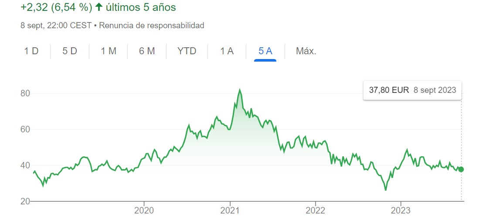 Cotización Tencent. 3 League of Legends "League of Legends" (popularmente conocido par la abreviatura LoL) es un popular videojuego en línea de estrategia con elementos multijugador, del género MOBA, que se enfoca en magia y tácticas, donde dos equipos compuestos por cinco jugadores cada uno, se esfuerzan por aniquilar la base enemiga. Desde su lanzamiento oficial el 27 de octubre de 2009 ha ganado una gran base de jugadores y una presencia principal en la escena competitiva de los deportes electrónicos (E-Sports). El juego involucra participar en diversas ligas, tanto de gran envergadura como más pequeñas, las cuales se llevan a cabo en diferentes partes del mundo. El evento principal de esta competición es el Campeonato Mundial, un evento que se extiende durante aproximadamente un mes y que establece el rumbo de la temporada para los mejores jugadores del juego. Debido a su popularidad y éxito, "League of Legends" se ha convertido en uno de los títulos más influyentes en la industria de los videojuegos y ha dado lugar a una extensa comunidad de jugadores, retransmisiones en vivo y estructura de ligas competitivas sólida en los E-Sports, con torneos y campeonatos con un gran seguimiento a nivel mundial. Para conseguir situarlo entre los E-sports más seguidos, Riot Games adoptó dos decisiones fundamentales en la estrategia de comercialización de su videojuego League of Legends: En primer lugar, han priorizado las necesidades de los jugadores. Los propios diseñadores y propietarios de la compañía son ávidos jugadores de League of Legends y otros títulos. Esta cercanía les permitió desde el comienzo a mejorar constantemente el juego, adaptándolo a las preferencias de su audiencia mediante actualizaciones mensuales y pruebas diarias. La segunda decisión trascendental fue crear un juego en línea gratuito para PC, decisión que creó a tendencia detro de la industria. Esto respondió a una demanda que experimentaba obstáculos significativos debido a las barreras de entrada asociadas con los pagos iniciales o suscripciones mensuales. Riot Games eliminó esta barrera al ofrecer un producto accesible y sin coste alguno para todo tipo de público. Existen además otros dos hechos diferenciadores clave en la experiencia de juego en comparación con otros títulos existentes, lo que ha sido esencial para su éxito y está generando tendencias en el sector: En primer lugar, han diseñado un juego con una curva de aprendizaje inicial suave, atrayendo a nuevos jugadores, y al mismo tiempo, una curva de aprendizaje avanzada que desafía a aquellos que aspiran a dominar el juego. Esto hace que League of Legends sea atractivo para un público casual que no puede dedicar mucho tiempo al juego, mientras que ofrece profundidad y desafío para los jugadores más dedicados. El segundo diferenciador significativo es la implementación de micropagos que no desequilibran la experiencia de juego. Estos micropagos se enfocan en mejoras visuales y no otorgan ventajas competitivas por invertir más dinero. Esta estrategia fomenta una lealtad a largo plazo, ya que la ausencia de equilibrio en el juego solía llevar a la pérdida de jugadores. Además, la existencia de micropagos es esencial para mantener la estructura del juego. Riot Games ha gestionado esta dinámica de manera innovadora para no comprometer la base de jugadores, abordando así un problema que afectaba a muchos juegos que hacían uso de micropagos. 3.1 Ingresos League of Legend En enero de 2021, League of Legends sólo gano por ingresos 1,75$ mil millones de dólares. Sus principales fuentes de ingresos son: Compras en el juego: Las microtransacciones en juegos como League of Legends generan importantes ingresos, ganando alrededor de $ 31 por segundo. 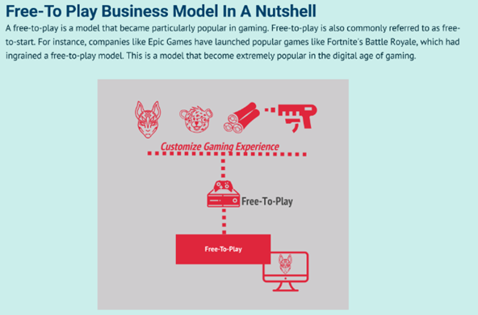 Esquema de negocio Free-to play Es un factor muy importante a destacar que la mayoría de los ingresos de Riot Games son producidos por la tienda online y vienen dados de productos virtuales intangibles cuya inversión inicial es alta, pero a medida que pasa el tiempo sus costes son muy bajos comparado con los beneficios que se generan Publicidad: La empresa gana con la publicidad durante los torneos de eSports transmitidos en plataformas como YouTube Deportes electrónicos: Riot Games vende patrocinios, derechos de transmisión y entradas para eventos en vivo para sus torneos de eSports. Mercancías: La empresa vende productos relacionados con juegos y colabora con marcas como Nike y Coca-Cola. 3.2 Evolución de suscriptores Desde su lanzamiento oficial, el número de suscriptores no ha parado de crecer. En agosto de 2023, últimos datos disponibles, cuenta con alrededor de 150 millones de jugadores activos; cuando en el mismo mes de 2020, el juego contaba con 105 millones de cuentas activas. Por tanto, a pesar de la antigüedad del juego, las mejoras y actualizaciones hacen que el total de jugadores siga en una dinámica creciente 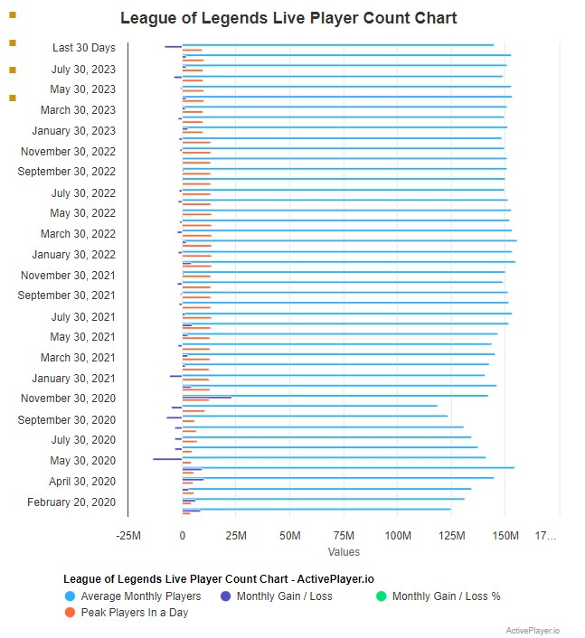 Evolución suscriptores Fuente: Activeplayer.io Otros datos interesantes que desmuestran el impacto a nivel mundial que tiene el juego es el volumen de espectadores en retransmisiones de partidas o eventos a través de la plataforma Twitch. En agosto de 2023, ha habido retrasmisiones mundiales de partidas en Twitch con picos de audiencia de más de 400.000 espectadores y en ese mes, las horas totales acumuladas de visualización de partidas o eventos a través de esa plataforma superaban los 95 millones de horas 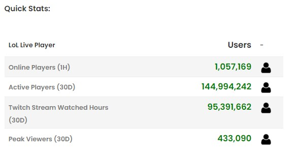 Datos actuales sobre visualizaciones Fuente: Activeplayer.io Según la página web Statista.com, los eventos de LoL en Twitch fueron vistos por una media de aproximadamente 129.400 espectadores en noviembre de 2022, última fecha donde presenta datos y muestra una claro crecimiento desde 2018. Su audiencia máxima en la plataforma de streaming la alcanzó en 2021, coincidiendo con el estreno de Netflix de la serie de animación Arcane, basada en el juego. Concretamente, se registraron más de algo más 280.000 espectadores a nivel mundial durante dicho mes. 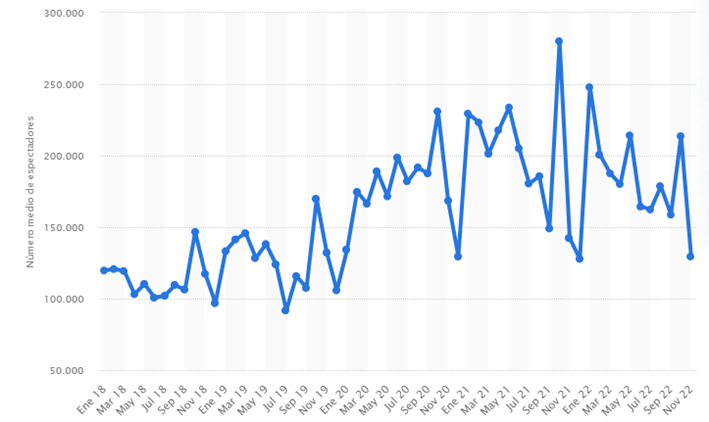 Datos espectadores hasta 2022 según web Statica Fuente: Statista.com 3.3 Ligas y competiciones Existen numerosas ligas y competiciones de LoL en todo el mundo tanto a nivel regional como mundial. Entre las principales ligas y competiciones de LoL destacan: League of Legends Championship Series (LCS): La LCS es la liga profesional de LoL en América del Norte (Estado Unidos y Canadá). Se juega en dos divisiones: la LCS y la Academy League, que sirve como cantera de talentos. Los equipos compiten en temporadas regulares y playoffs para ganar el título de campeón de la región y la oportunidad de representar a NA en torneos internacionales. League of Legends European Championship (LEC): La LEC es la liga equivalente en Europa, que sigue un formato similar al de la LCS. Los equipos compiten en temporadas regulares y playoffs, y el campeón europeo avanza a competiciones internacionales. 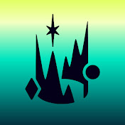 League of Legends Pro League (LPL): La LPL es la liga profesional de LoL en China. Los equipos chinos han tenido un éxito notable en torneos mundiales. 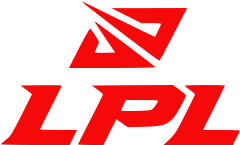 League of Legends Champions Korea (LCK): La LCK es la liga profesional de LoL en Corea del Sur, una de las regiones más dominantes en la historia de los deportes electrónicos de LoL. Los equipos coreanos han ganado múltiples Campeonatos Mundiales de LoL. Campeonato Mundial de League of Legends (Worlds): Es la competición más prestigiosa dentro de todo el circuito d LoL eSports. Los mejores equipos de todas las regiones compiten por el título de campeón mundial. Worlds atrae a una enorme audiencia global y supone una gran bolsa de premios para los equipos que compiten. Mid-Season Invitational (MSI): MSI es un torneo internacional que se celebra en la mitad de la temporada y reúne a los campeones de diferentes regiones. Es una oportunidad para que los equipos demuestren su habilidad a nivel global. All-Star Event: Este evento anual reúne a los jugadores más destacados de todo el mundo en una competición amistosa, al estilo de los All-Star de la NBA. Los fans votan por sus jugadores favoritos para formar equipos representativos de cada región. Ligas regionales: Además de las ligas mencionadas, muchas otras regiones también tienen sus propias ligas profesionales, como la LMS en Taiwán y el Sudeste Asiático, la PCS en el Pacífico, y la liga española: Se realizan dos temporadas, la de invierno y la de verano, donde según tu clasificación en los “playoffs” obtienes puntos para el campeonato mundial. Al igual que la UEFA concede plazas para la “Liga de Campeones” en el fútbol dependiendo de la fuerza de la liga de una región, los organizadores del premio del Campeonato Mundial de LoL hacen exactamente lo mismo. Por ejemplo, la liga China dispone de cuatro puestos, mientras que Europa tres y las ligas menores como Brasil sólo una. 3.4 Retrasmisiones y streamers Riot Games, organiza retransmisiones oficiales de sus competiciones. Estas retransmisiones se realizan en múltiples idiomas y se pueden seguir en plataformas como Twitch y YouTube. Sin embargo, gran parte de la popularidad de League of Legends se ha basado en las retransmisiones en vivo (streams) por locutores no profesionales conocidos por streamers Entre algunos de los streamers más influyentes a nivel mundial se incluyen : Tyler1 (Tyler Steinkamp): Conocido por su personalidad enérgica y su juego agresivo, Tyler1 es uno de los streamers más populares de LoL. Imaqtpie (Michael Santana): Antiguo jugador profesional que ahora se dedica al streaming. Es conocido por su sentido del humor y su estilo relajado. Yassuo (Moe Harada): Conocido por su habilidad en jugar con campeones de media y su interacción activa con los espectadores. Voyboy (Joedat Esfahani): Exjugador profesional que se ha centrado en el streaming y es respetado por su habilidad y experiencia en el juego. Nightblue3 (Rabia Yazbek): Es famoso por su contenido educativo y guías sobre cómo mejorar en LoL. En español, existen varios streamers con grandes audiencias, sin embargo, el más destacado y conocido es el de Ibai Llanos, que precisamente se dio a conocer en 2014 por sus retrasmisiones de partidas de League of Legends para la Superliga Española y que rápidamente fue promovido para retransmitir la liga norteamericana LCS. Retransmisiones donde posee records mundiales de audiencia por su canal de Twitch, en el que tiene 15 millones de suscriptores. Hoy en día, compagina sus retrasmisiones de esports con otras múltiples actividades: es copropietario junto al ex-jugador de fútbol Gerard Piqué del equipo de esports KOI, además de promover eventos de deportes alternativos seguidos por audiencias millonarias. Según la página web Dexerto.es , estos son los 5 streamers en español de eventos de League of Legends con mayores audiencias en diciembre de 2022: POSICIÓN STREAMER HORAS VISTAS HORAS DE STREAMING PICO DE ESPECTADORES MEDIA DE ESPECTADORES 1 ElmiilloR 907.599 192 8.767 4.709 2 Knekro 420.494 57 11.273 7.313 3 Nissaxter 405.560 100 7.861 4.045 4 Werlyb 420.494 57 11.273 7.313 5 BarbaKahn 143.874 20 10.332 7.532 4 Cómo se juega Dos conjuntos de cinco jugadores cada uno, uno identificado por el color azul y otro por el rojo, se enfrentan en un campo de batalla. La mayor parte de la acción se desarrolla en tres vías designadas como “superior”. “central” e “inferior”, además de las bases respectivas. Cualquier área en el mapa que no esté ocupada por las vías o las bases se denomina jungla, donde los jugadores pueden encontrar monstruos neutrales que al eleminarlos pueden obtener como recompensas oro y experiencia. 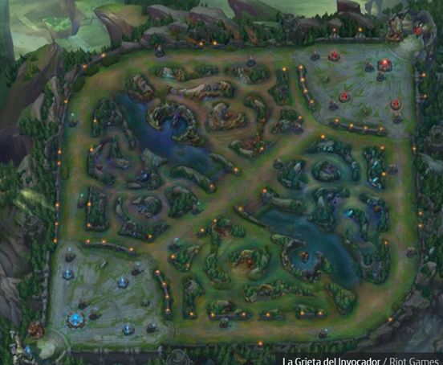 Vía Superior Vía Central Vía Inferior Jungla Jungla Campo de batalla donde se desarrollan las partidas Los jugadores eligen lo se se denominan “campeones”, avatares que poseen distitans habilidades tanto en ataque como en defensa. Antes de comenzar la partida, el equipo rival "banea" la elección de 5 campeones y el equipo contrario tiene que elegir entre los que quedan seleccionables. Existen más de 130 Campeones disponibles . Cada uno cuenta con cuatro habilidades únicas. Cada una de ellas tiene una tecla asignada (Q, W, E o R). La cuarta habilidad (R) recibe el nombre de “Ultimate” o “Definitiva”, es la más importante y potente y la que más tiempo requiere para ser utilizada. Durante la partida, los jugadores pueden mejorar las habilidades del campeón que han seleccionado mediante compras que realizan en la base con el oro que han ido acumulando durante la partida, las compras son objetos que mejoran sus habilidades mágicas y aumentar su potencial de defensa y daño. Paralelamente, ganar experiencia ayuda a los jugadores a subir de nivel. Además de los campeones cada equipo cuenta con una horda de “esbirros” (minions) controlados por el juego para ayudar a derribar la base enemiga. El equipo que logra destruir primero una estructura conocida como el “Nexo”, ubicada en la parte trasera de la base del enemigo, se alza como vencedor. A pesar de la sencilla apariencia que posee, se puede afirmar que la realidad es mucho más compleja. Mientras al menos uno de los tres “Inhibidores” o alguna de las torretas en la base, permanezca en pie, el Nexo no podrá ser atacado. Las Torretas desempeñan un papel crucial en el juego, infringiendo daño a los enemigos y permitiendo que un equipo tenga un mayor control del campo de batalla. Frecuentemente, los equipos recurren a los esbirros, que son generados automáticamente por el Nexo y no está bajo el control directo de los jugadores, para ayudar a derribar algunas torretas. 4.1 Modos de juego Con el fin de preservar la popularidad del videojuego, suelen incorporarse distintos modos de juego. Estos modos pueden estar disponibles por un periodo limitado de tiempo o en dependencia de su éxito terminar siendo una parte establecida del mismo. En la actualidad, se mantienen como modos permanentes el Clásico, el Dominon y el ARAM (All Random un Mid). De manera reciente se ha incorporado el modo TeamFight Tactics. Por otro lado, eventos como Snowdown, IRF (Ultra Rapid Fire) y ARUF (All Random Ultra Rapid Fira) son ejemplos de modos que han estado temporalmente disponibles. A continuación, se explican algunos de los distintos modos de juego : MODO DESCRIPCIÓN Clásico Es el modo original de League of Legends, se centra en destruir el Nexo enemigo. Hay dos mapas disponibles “La Grieta del Invocador” y el “Bosque Retorcido”, cada uno con diferente cantidad de jugadores. Es necesario derribar las torretas e inhibidores que protegen los Nexos enemigos. Dominion En este modo dos equipos de cinco jugadores compiten en el mapa “La Cicatriz de Cristal”. En lugar de destruir los Nexos, deben controlarlos durante cierto tiempo. Esto incrementa los puntos de captura propios y reduce los del equipo contrario. También conocido como el modo “defender y destruir”. ARAM (All Random All Mid) Modo de juego 5 vs 5 (5v5) que se juega en el mapa especial llamado "El Abismo de los Lamentos" (Howling Abyss). Todo aleatorio (all random): los jugadores recien un campeón de forma aleatoria. All mid: los dos equipos luchan en la línea central. Es un modo de juego más relajado y caótico . El objetivo principal sigue siendo destruir el Nexo enemigo, pero ARAM se juega generalmente de una manera más divertida y menos estratégica . Snowdown Formato temporal. Está basado en el formato Battle Royale, donde todos luchan entre sí y el último jugador en pie gana. URF (Ultra Rapid Fire) Formato temporal. En este modo, los costos de maná y energía se eliminan por completo. Los tiempos de enfriamiento de habilidades se reducen significativamente, al igual que la duración de los hechizos de invocador. ARUF (All Random Ultra Rapid) Formato temporal. Una combinación de URF y ARAM. La selección de campeones es similar a ARAM, pero las mecánicas de juego siguen las reglas de URF. TFT (Teamfight Tactics) Formato temporal. Se trata de un juego “todos contra todos” basado en el reclutamiento, con partidas de hasta ocho jugadores. Los participantes reclutan campeones poderosos, los despliegan en el tablero y luchan por ser el último en pie. De entre todos los vistos con anterioridad el más popular es el clásico en el escenario de la “Grieta del Invocador”. Es el escenario más frecuentado debido a que es considerado el estándar del juego competitivo y el único donde se pueden jugar partidas clasificatorias, en las que el resultado afecta a la puntuación en las ligas. 4.2 Roles ROL DESCRIPCIÓN Top El jugador en esta posición se enfrena en el carril superior del mapa, aunque no significa que tenga que permanecer en este lugar durante toda la partida. El Toplaner generalmente opta por campeones resistentes capaces de aguantar bien los golpes enemigos. Sin embargo, también se pueden encontrar “Duelistas”, “Asesinos” y “Magos”. Por lo general, los campeones de top se destacan por liderar el ataque del equipo. Jungla La jungla se encuentra entre las tres calles y alberga monstruos neutrales. Al derrotarlos, otorgan oro, experiencia y a veces mejoras o “buffs temporales” que brindan asistencia. El Jungler ejerce presión en todo el mapa, desplazándose constantemente, siendo el motor del juego. Los campeones de la jungla son diversosdeben de tener la capacidad de emboscar a los enemigos para crear ventajas numéricas en áreas específicas. Medio En esta calle se encuentran campeones capaces de infligir grandes cantidades de daño, generalmente a distancia. Es el dominio de “Magos” y “Asesinos”. Al igual que en el carril superior, se trata de un enfrentamiento uno contra uno, con las torretas de fondo. Este rol es altamente técnico, donde la ubicación, reflejos y decisiones rápidas son vitales. Dado que se sitúa en el centro del mapa, también puede moverse con facilidad y tener influencia en otras áreas. Tirador El Tirador también denominado AD Carry o ADC, es un pilar fundamental en el juego. Su tarea es infligir daño constante a distancia durante los combates. Sin embargo, sus defensas son mínimas y es vulnerable, por lo que el equipo deberá de protegerlo en todo momento. Es un rol sumamente técnico y suele ser muy útiles en las etapas avanzadas. Apoyo El Apoyo ayuda al equipo tanto en la defensa como en la ofensiva, aunque su daño directo a los enemigos es limitado. Su función implica ralentizar, aturdir, curar y más. Este campeón debe contribuir al ataque, a veces liderando las ofensivas, y la defensa, rescatando a los aliados en situaciones difíciles. Actúa como el principal protector del Tirador. Sus tareas incluyen explorar zonas del mapa para garantizar la seguridad mediante “Guardianes de Visión”. Junto al Tirador, forman la Calle Inferior, también denominada Bot Lane. Cabe comentar que cuando uno de los personajes es aniquilado, los jugadores deben de esperar cierto tiempo a que su avatar vuelva a entrar en juego, reapareciendo por detrás de su Nexo base, lo que aumenta las posibilidades de que un enemigo destruya un a base o controle un carril. 4.3 Niveles, Puntos de Liga y MMR En el juego League of Legends, MMR significa "Matchmaking Rating" (en español, "Puntuación de Emparejamiento"). Es un sistema de clasificación oculto que se utiliza para determinar qué jugadores se enfrentarán en las partidas clasificatorias y normales. El MMR se basa en el rendimiento de un jugador en sus partidas anteriores. A medida que un jugador gana o pierde partidas, su MMR se ajusta en consecuencia. MMR vs Niveles Si el MMR refleja el nivel general de habilidad del jugador, los niveles actúan como una representación fluida de su posición actual en relación con ese potencial. Esto resulta útil para entender su posición en la clasificación en comparación con otor jugadores y, además, brinda un sistema de progresión con niveles y divisiones significativos. Aunque la relación entre el MMR y el nivel de un jugador pueda ser confidencial, los resultados se hacen visibles a través de otro sistema conocido por los jugadores de partidas clasificatorias: los “puntos de liga” también conocidos como (PL). Los puntos de liga son el componente que facilitará la transición entre niveles. Se otorgarán PL por cada victoria y se te restarán por cada derrota. Por lo general, necesitarás acumular 100 PL para avanzar entre divisiones, aunque hay otra normativa que impactan en el avance, en las que habría que entrar más en detalle como pueden ser la continuidad de días jugados u otros aspectos en función de la división en la que se encuentra el jugador. 4.4 Categorías (Ligas) Cuando un jugador de League of Legend alcanza el nivel treinta puede jugar partidas clasificatorias pasando a las categorías profesionales que se listan a continuación, denominadas ligas: LIGAS DESCRIPCIÓN Hierro Se trata de la primera Liga competitiva, cuenta con 5 divisiones y el nivel de los jugadores es relativamente bajo, quienes no dominan las mecánicas básicas de League of Legends acaban aquí. Popularmente se conoce como “el pozo”. Bronce Se trata de una de las ligas más pobladas de League of Legends. Cuenta con 5 divisiones y el nivel sigue siendo bajo, aunque ya se ven ciertas mecánicas individuales y en equipo, sobre todo en las divisiones más altas. Plata Aquí se encuentran la mayoría de los jugadores de partidas clasificatorias. Al tener mayor conocimiento del juego las partidas muestran mejores jugadas y dinámicas de equipo. Oro Se trata de una buena medida de habilidad conocimiento y destreza del jugador. La inclusión de recompensas al fina de la temporada es un gran incentivo para todos los jugadores a nivel mundial. Platino Es una liga que se encuentra en un punto intermedio del sistema de clasificación, lo que sugiere que lo s jugadores que la integran han demostrado un nivel de habilidad y comprensión del juego por encima del promedio. Esmeralda Ya nos acercamos al máximo nivel de jugador, esta liga se considera semiprofesional. Las recompensas siguen incrementándose al final de temporada. Diamante Todos sus jugadores conocen ampliamente el juego, habiendo jugado en todos sus modos y con la mayoría de los campeones, poderes y combos disponibles. Se trata además de la última Liga sin límite de jugadores en esta se forjan los jugadores profesionales. Maestro y Gran Maestro Incluye a muchos jugadores top del mundo, tiene cupo limitado de competidores y el nivel es profesional. La competición se vuelve más difícil y sólo los mejores se mantienen en esta Liga. Retador La máxima aspiración que cuenta con 300 espacios para competidores. El nivel individual se combina con las habilidades de equipo para dar lugar a partidas vibrantes y emocionantes. Las recompensas tienen color diferente al de las Ligas inferiores. Los niveles de Hierro a Diamante cuentan con cuatro divisiones cada uno. Es necesario completar una división para alcanzar la siguiente. Es decir, por ejemplo, si te encuentra en Plata III debes ascender a través de Plata II y Plata I antes de llegar a Oro IV. Si sufres la desgracia de descender un nivel empezarás por la división más alta del nivel inmediato inferior. El sistema de ascenso cuenta con una importante variedad de excepciones y es mucho más complejo de lo que parece, teniendo que ser cada caso analizado específicamente.
2 ¿Qué es Riot? Riot Games Inc. es una compañía estadounidense dedicada a la creación y publicación de videojuegos, así como a la organización de competiciones de deportes electrónicos. Tiene su sede en West Los Angeles, California. Fundada en septiembre de 2006 por los emprendedores Brandon Beck y Marc Merrill con la principal idea de desrrollar el videojuego League of Legends y construir un negocio en torno a él. En 2009liberan la versión beta para testeo del público y seis meses después, en 27 de octubre de 2009 por fin lanzan la versión oficial del juego, un videojuego en linea multijugador gratuito en el que el usuario puede realizar microcompras para acceder a extras. Desde su lanzamiento, la empresa se dedica a mejorar el juego gracias a la interactuación en foros de los usuarios implementando ajustes según los comentarios recibidos, de forma que dos años depués de su lanzamiento, la empresa publica unos ingresos de 85 millones de dolares y traslada su sede europea de Brighton a Dublin En febrero de 2011, Tencent Holdings Limited, una de las empresas chinas más grandes del mundo del entretenimiento y la tecnología adquirió la empresa Riot Games por más de 400 millones de dolares. A pesar de hacerse el control de la empresa, mantenía todo el equipo directivo y creativo de Riot Games, lo que permite mantener la estrategia inicial que habían diseñado Brandon Beck y Marc Merrill La estrategia, entre otras ideas que se desarrollan más adelante al hablar específicamente de League of Legends, consistía en centrarse en mejorar la experiencia de usuario como si fuera un videojuego comercial de pago pero siguiendo siendo gratuíto. Esto le permitió crecer de una manera arrolladora, incrementando número de jugadores habituales suscritos e ingresos, hasta tal punto que ya en 2014 preveían unos ingresos de 1000 millones de dólares La empresa ha generado diversos títulos relacionados con esta misma franquicia. Además del videojuego, Riot Games supervisa 14 ligas e-sports a nivel global, incluyendo el prestigioso Campeonato del Mundo de League of Legends. 2.1 Tencent Tencent es un conglomerado multinacional chino fundado en 1998 por Ma Huateng, Zhang Zhidong y Xu Chenye. Entre sus diversas subsidiarias globales se encuentran empresas en las industrias de servicios en línea, música e inteligencia artificial. Pero quizás sea más conocido por su interés en el sector de los videojuegos, tanto como desarrollador de juegos para el mercado chino como adquirente de varias empresas de juegos establecidas. Tencent es una gran empresa con participación en más de 600 empresas. Actuales negocios más significativos de Tencent Holdings: Videojuegos en línea como el COD Online o el Dungeon Fighter Online Acuerdos con grandes productores para la distribución de música E-commerce como JD.com Plataforma de mensajería instantánea como QQ Weibo, plataforma en China similar a Twitter Wechat, plataforma similar a whatssup en China, que cuenta con más de 770 millones de usuarios activos. Estructura empresarial Tescent. Las acciones de Tencent Holdings se negocian en la bolsa de Hong Kong (HKG) y en la Bolsa de Frankfurt (FRA). 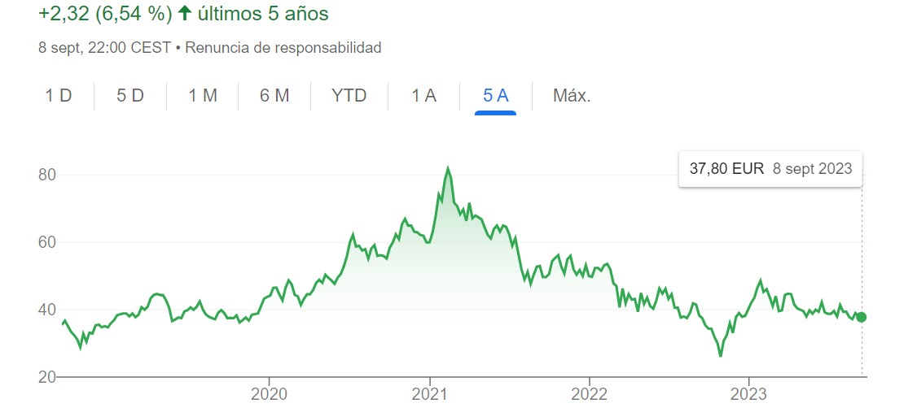 Cotización Tencent.
3 League of Legends "League of Legends" (popularmente conocido par la abreviatura LoL) es un popular videojuego en línea de estrategia con elementos multijugador, del género MOBA, que se enfoca en magia y tácticas, donde dos equipos compuestos por cinco jugadores cada uno, se esfuerzan por aniquilar la base enemiga. Desde su lanzamiento oficial el 27 de octubre de 2009 ha ganado una gran base de jugadores y una presencia principal en la escena competitiva de los deportes electrónicos (E-Sports). El juego involucra participar en diversas ligas, tanto de gran envergadura como más pequeñas, las cuales se llevan a cabo en diferentes partes del mundo. El evento principal de esta competición es el Campeonato Mundial, un evento que se extiende durante aproximadamente un mes y que establece el rumbo de la temporada para los mejores jugadores del juego. Debido a su popularidad y éxito, "League of Legends" se ha convertido en uno de los títulos más influyentes en la industria de los videojuegos y ha dado lugar a una extensa comunidad de jugadores, retransmisiones en vivo y estructura de ligas competitivas sólida en los E-Sports, con torneos y campeonatos con un gran seguimiento a nivel mundial. Para conseguir situarlo entre los E-sports más seguidos, Riot Games adoptó dos decisiones fundamentales en la estrategia de comercialización de su videojuego League of Legends: En primer lugar, han priorizado las necesidades de los jugadores. Los propios diseñadores y propietarios de la compañía son ávidos jugadores de League of Legends y otros títulos. Esta cercanía les permitió desde el comienzo a mejorar constantemente el juego, adaptándolo a las preferencias de su audiencia mediante actualizaciones mensuales y pruebas diarias. La segunda decisión trascendental fue crear un juego en línea gratuito para PC, decisión que creó a tendencia detro de la industria. Esto respondió a una demanda que experimentaba obstáculos significativos debido a las barreras de entrada asociadas con los pagos iniciales o suscripciones mensuales. Riot Games eliminó esta barrera al ofrecer un producto accesible y sin coste alguno para todo tipo de público. Existen además otros dos hechos diferenciadores clave en la experiencia de juego en comparación con otros títulos existentes, lo que ha sido esencial para su éxito y está generando tendencias en el sector: En primer lugar, han diseñado un juego con una curva de aprendizaje inicial suave, atrayendo a nuevos jugadores, y al mismo tiempo, una curva de aprendizaje avanzada que desafía a aquellos que aspiran a dominar el juego. Esto hace que League of Legends sea atractivo para un público casual que no puede dedicar mucho tiempo al juego, mientras que ofrece profundidad y desafío para los jugadores más dedicados. El segundo diferenciador significativo es la implementación de micropagos que no desequilibran la experiencia de juego. Estos micropagos se enfocan en mejoras visuales y no otorgan ventajas competitivas por invertir más dinero. Esta estrategia fomenta una lealtad a largo plazo, ya que la ausencia de equilibrio en el juego solía llevar a la pérdida de jugadores. Además, la existencia de micropagos es esencial para mantener la estructura del juego. Riot Games ha gestionado esta dinámica de manera innovadora para no comprometer la base de jugadores, abordando así un problema que afectaba a muchos juegos que hacían uso de micropagos. 3.1 Ingresos League of Legend En enero de 2021, League of Legends sólo gano por ingresos 1,75$ mil millones de dólares. Sus principales fuentes de ingresos son: Compras en el juego: Las microtransacciones en juegos como League of Legends generan importantes ingresos, ganando alrededor de $ 31 por segundo. 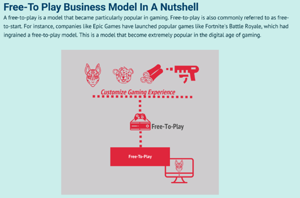 Esquema de negocio Free-to play Es un factor muy importante a destacar que la mayoría de los ingresos de Riot Games son producidos por la tienda online y vienen dados de productos virtuales intangibles cuya inversión inicial es alta, pero a medida que pasa el tiempo sus costes son muy bajos comparado con los beneficios que se generan Publicidad: La empresa gana con la publicidad durante los torneos de eSports transmitidos en plataformas como YouTube Deportes electrónicos: Riot Games vende patrocinios, derechos de transmisión y entradas para eventos en vivo para sus torneos de eSports. Mercancías: La empresa vende productos relacionados con juegos y colabora con marcas como Nike y Coca-Cola. 3.2 Evolución de suscriptores Desde su lanzamiento oficial, el número de suscriptores no ha parado de crecer. En agosto de 2023, últimos datos disponibles, cuenta con alrededor de 150 millones de jugadores activos; cuando en el mismo mes de 2020, el juego contaba con 105 millones de cuentas activas. Por tanto, a pesar de la antigüedad del juego, las mejoras y actualizaciones hacen que el total de jugadores siga en una dinámica creciente 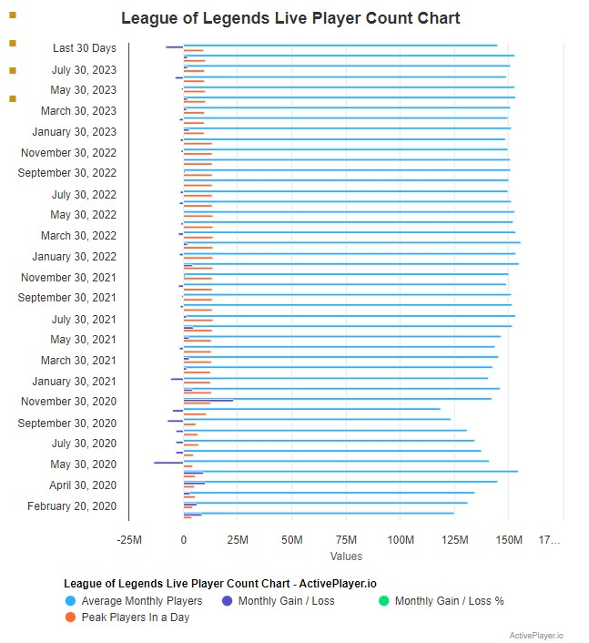 Evolución suscriptores Fuente: Activeplayer.io Otros datos interesantes que desmuestran el impacto a nivel mundial que tiene el juego es el volumen de espectadores en retransmisiones de partidas o eventos a través de la plataforma Twitch. En agosto de 2023, ha habido retrasmisiones mundiales de partidas en Twitch con picos de audiencia de más de 400.000 espectadores y en ese mes, las horas totales acumuladas de visualización de partidas o eventos a través de esa plataforma superaban los 95 millones de horas 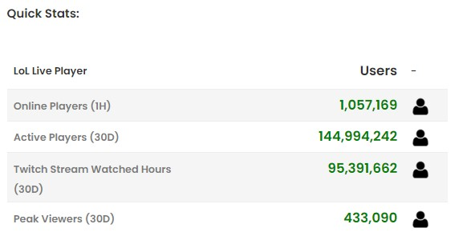 Datos actuales sobre visualizaciones Fuente: Activeplayer.io Según la página web Statista.com, los eventos de LoL en Twitch fueron vistos por una media de aproximadamente 129.400 espectadores en noviembre de 2022, última fecha donde presenta datos y muestra una claro crecimiento desde 2018. Su audiencia máxima en la plataforma de streaming la alcanzó en 2021, coincidiendo con el estreno de Netflix de la serie de animación Arcane, basada en el juego. Concretamente, se registraron más de algo más 280.000 espectadores a nivel mundial durante dicho mes. 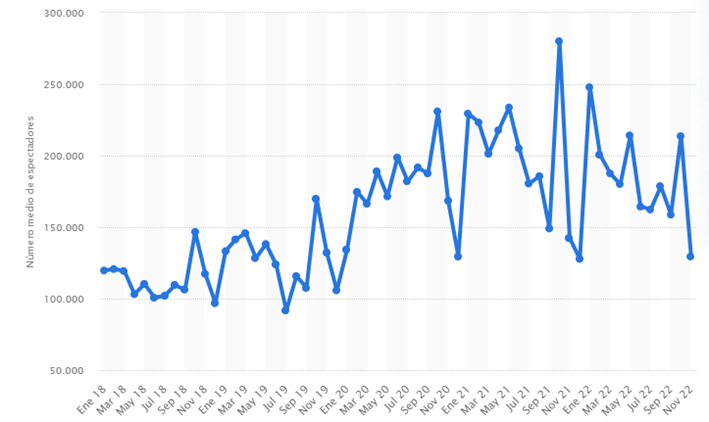 Datos espectadores hasta 2022 según web Statica Fuente: Statista.com 3.3 Ligas y competiciones Existen numerosas ligas y competiciones de LoL en todo el mundo tanto a nivel regional como mundial. Entre las principales ligas y competiciones de LoL destacan: League of Legends Championship Series (LCS): La LCS es la liga profesional de LoL en América del Norte (Estado Unidos y Canadá). Se juega en dos divisiones: la LCS y la Academy League, que sirve como cantera de talentos. Los equipos compiten en temporadas regulares y playoffs para ganar el título de campeón de la región y la oportunidad de representar a NA en torneos internacionales. League of Legends European Championship (LEC): La LEC es la liga equivalente en Europa, que sigue un formato similar al de la LCS. Los equipos compiten en temporadas regulares y playoffs, y el campeón europeo avanza a competiciones internacionales. 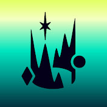 League of Legends Pro League (LPL): La LPL es la liga profesional de LoL en China. Los equipos chinos han tenido un éxito notable en torneos mundiales. 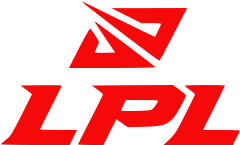 League of Legends Champions Korea (LCK): La LCK es la liga profesional de LoL en Corea del Sur, una de las regiones más dominantes en la historia de los deportes electrónicos de LoL. Los equipos coreanos han ganado múltiples Campeonatos Mundiales de LoL. Campeonato Mundial de League of Legends (Worlds): Es la competición más prestigiosa dentro de todo el circuito d LoL eSports. Los mejores equipos de todas las regiones compiten por el título de campeón mundial. Worlds atrae a una enorme audiencia global y supone una gran bolsa de premios para los equipos que compiten. Mid-Season Invitational (MSI): MSI es un torneo internacional que se celebra en la mitad de la temporada y reúne a los campeones de diferentes regiones. Es una oportunidad para que los equipos demuestren su habilidad a nivel global. All-Star Event: Este evento anual reúne a los jugadores más destacados de todo el mundo en una competición amistosa, al estilo de los All-Star de la NBA. Los fans votan por sus jugadores favoritos para formar equipos representativos de cada región. Ligas regionales: Además de las ligas mencionadas, muchas otras regiones también tienen sus propias ligas profesionales, como la LMS en Taiwán y el Sudeste Asiático, la PCS en el Pacífico, y la liga española: Se realizan dos temporadas, la de invierno y la de verano, donde según tu clasificación en los “playoffs” obtienes puntos para el campeonato mundial. Al igual que la UEFA concede plazas para la “Liga de Campeones” en el fútbol dependiendo de la fuerza de la liga de una región, los organizadores del premio del Campeonato Mundial de LoL hacen exactamente lo mismo. Por ejemplo, la liga China dispone de cuatro puestos, mientras que Europa tres y las ligas menores como Brasil sólo una. 3.4 Retrasmisiones y streamers Riot Games, organiza retransmisiones oficiales de sus competiciones. Estas retransmisiones se realizan en múltiples idiomas y se pueden seguir en plataformas como Twitch y YouTube. Sin embargo, gran parte de la popularidad de League of Legends se ha basado en las retransmisiones en vivo (streams) por locutores no profesionales conocidos por streamers Entre algunos de los streamers más influyentes a nivel mundial se incluyen : Tyler1 (Tyler Steinkamp): Conocido por su personalidad enérgica y su juego agresivo, Tyler1 es uno de los streamers más populares de LoL. Imaqtpie (Michael Santana): Antiguo jugador profesional que ahora se dedica al streaming. Es conocido por su sentido del humor y su estilo relajado. Yassuo (Moe Harada): Conocido por su habilidad en jugar con campeones de media y su interacción activa con los espectadores. Voyboy (Joedat Esfahani): Exjugador profesional que se ha centrado en el streaming y es respetado por su habilidad y experiencia en el juego. Nightblue3 (Rabia Yazbek): Es famoso por su contenido educativo y guías sobre cómo mejorar en LoL. En español, existen varios streamers con grandes audiencias, sin embargo, el más destacado y conocido es el de Ibai Llanos, que precisamente se dio a conocer en 2014 por sus retrasmisiones de partidas de League of Legends para la Superliga Española y que rápidamente fue promovido para retransmitir la liga norteamericana LCS. Retransmisiones donde posee records mundiales de audiencia por su canal de Twitch, en el que tiene 15 millones de suscriptores. Hoy en día, compagina sus retrasmisiones de esports con otras múltiples actividades: es copropietario junto al ex-jugador de fútbol Gerard Piqué del equipo de esports KOI, además de promover eventos de deportes alternativos seguidos por audiencias millonarias. Según la página web Dexerto.es , estos son los 5 streamers en español de eventos de League of Legends con mayores audiencias en diciembre de 2022: POSICIÓN STREAMER HORAS VISTAS HORAS DE STREAMING PICO DE ESPECTADORES MEDIA DE ESPECTADORES 1 ElmiilloR 907.599 192 8.767 4.709 2 Knekro 420.494 57 11.273 7.313 3 Nissaxter 405.560 100 7.861 4.045 4 Werlyb 420.494 57 11.273 7.313 5 BarbaKahn 143.874 20 10.332 7.532
4 Cómo se juega Dos conjuntos de cinco jugadores cada uno, uno identificado por el color azul y otro por el rojo, se enfrentan en un campo de batalla. La mayor parte de la acción se desarrolla en tres vías designadas como “superior”. “central” e “inferior”, además de las bases respectivas. Cualquier área en el mapa que no esté ocupada por las vías o las bases se denomina jungla, donde los jugadores pueden encontrar monstruos neutrales que al eleminarlos pueden obtener como recompensas oro y experiencia. 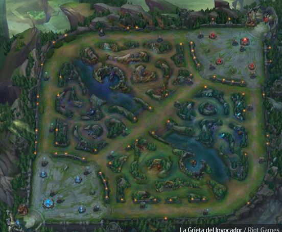 Vía Superior Vía Central Vía Inferior Jungla Jungla Campo de batalla donde se desarrollan las partidas Los jugadores eligen lo se se denominan “campeones”, avatares que poseen distitans habilidades tanto en ataque como en defensa. Antes de comenzar la partida, el equipo rival "banea" la elección de 5 campeones y el equipo contrario tiene que elegir entre los que quedan seleccionables. Existen más de 130 Campeones disponibles . Cada uno cuenta con cuatro habilidades únicas. Cada una de ellas tiene una tecla asignada (Q, W, E o R). La cuarta habilidad (R) recibe el nombre de “Ultimate” o “Definitiva”, es la más importante y potente y la que más tiempo requiere para ser utilizada. Durante la partida, los jugadores pueden mejorar las habilidades del campeón que han seleccionado mediante compras que realizan en la base con el oro que han ido acumulando durante la partida, las compras son objetos que mejoran sus habilidades mágicas y aumentar su potencial de defensa y daño. Paralelamente, ganar experiencia ayuda a los jugadores a subir de nivel. Además de los campeones cada equipo cuenta con una horda de “esbirros” (minions) controlados por el juego para ayudar a derribar la base enemiga. El equipo que logra destruir primero una estructura conocida como el “Nexo”, ubicada en la parte trasera de la base del enemigo, se alza como vencedor. A pesar de la sencilla apariencia que posee, se puede afirmar que la realidad es mucho más compleja. Mientras al menos uno de los tres “Inhibidores” o alguna de las torretas en la base, permanezca en pie, el Nexo no podrá ser atacado. Las Torretas desempeñan un papel crucial en el juego, infringiendo daño a los enemigos y permitiendo que un equipo tenga un mayor control del campo de batalla. Frecuentemente, los equipos recurren a los esbirros, que son generados automáticamente por el Nexo y no está bajo el control directo de los jugadores, para ayudar a derribar algunas torretas. 4.1 Modos de juego Con el fin de preservar la popularidad del videojuego, suelen incorporarse distintos modos de juego. Estos modos pueden estar disponibles por un periodo limitado de tiempo o en dependencia de su éxito terminar siendo una parte establecida del mismo. En la actualidad, se mantienen como modos permanentes el Clásico, el Dominon y el ARAM (All Random un Mid). De manera reciente se ha incorporado el modo TeamFight Tactics. Por otro lado, eventos como Snowdown, IRF (Ultra Rapid Fire) y ARUF (All Random Ultra Rapid Fira) son ejemplos de modos que han estado temporalmente disponibles. A continuación, se explican algunos de los distintos modos de juego : MODO DESCRIPCIÓN Clásico Es el modo original de League of Legends, se centra en destruir el Nexo enemigo. Hay dos mapas disponibles “La Grieta del Invocador” y el “Bosque Retorcido”, cada uno con diferente cantidad de jugadores. Es necesario derribar las torretas e inhibidores que protegen los Nexos enemigos. Dominion En este modo dos equipos de cinco jugadores compiten en el mapa “La Cicatriz de Cristal”. En lugar de destruir los Nexos, deben controlarlos durante cierto tiempo. Esto incrementa los puntos de captura propios y reduce los del equipo contrario. También conocido como el modo “defender y destruir”. ARAM (All Random All Mid) Modo de juego 5 vs 5 (5v5) que se juega en el mapa especial llamado "El Abismo de los Lamentos" (Howling Abyss). Todo aleatorio (all random): los jugadores recien un campeón de forma aleatoria. All mid: los dos equipos luchan en la línea central. Es un modo de juego más relajado y caótico . El objetivo principal sigue siendo destruir el Nexo enemigo, pero ARAM se juega generalmente de una manera más divertida y menos estratégica . Snowdown Formato temporal. Está basado en el formato Battle Royale, donde todos luchan entre sí y el último jugador en pie gana. URF (Ultra Rapid Fire) Formato temporal. En este modo, los costos de maná y energía se eliminan por completo. Los tiempos de enfriamiento de habilidades se reducen significativamente, al igual que la duración de los hechizos de invocador. ARUF (All Random Ultra Rapid) Formato temporal. Una combinación de URF y ARAM. La selección de campeones es similar a ARAM, pero las mecánicas de juego siguen las reglas de URF. TFT (Teamfight Tactics) Formato temporal. Se trata de un juego “todos contra todos” basado en el reclutamiento, con partidas de hasta ocho jugadores. Los participantes reclutan campeones poderosos, los despliegan en el tablero y luchan por ser el último en pie. De entre todos los vistos con anterioridad el más popular es el clásico en el escenario de la “Grieta del Invocador”. Es el escenario más frecuentado debido a que es considerado el estándar del juego competitivo y el único donde se pueden jugar partidas clasificatorias, en las que el resultado afecta a la puntuación en las ligas. 4.2 Roles ROL DESCRIPCIÓN Top El jugador en esta posición se enfrena en el carril superior del mapa, aunque no significa que tenga que permanecer en este lugar durante toda la partida. El Toplaner generalmente opta por campeones resistentes capaces de aguantar bien los golpes enemigos. Sin embargo, también se pueden encontrar “Duelistas”, “Asesinos” y “Magos”. Por lo general, los campeones de top se destacan por liderar el ataque del equipo. Jungla La jungla se encuentra entre las tres calles y alberga monstruos neutrales. Al derrotarlos, otorgan oro, experiencia y a veces mejoras o “buffs temporales” que brindan asistencia. El Jungler ejerce presión en todo el mapa, desplazándose constantemente, siendo el motor del juego. Los campeones de la jungla son diversosdeben de tener la capacidad de emboscar a los enemigos para crear ventajas numéricas en áreas específicas. Medio En esta calle se encuentran campeones capaces de infligir grandes cantidades de daño, generalmente a distancia. Es el dominio de “Magos” y “Asesinos”. Al igual que en el carril superior, se trata de un enfrentamiento uno contra uno, con las torretas de fondo. Este rol es altamente técnico, donde la ubicación, reflejos y decisiones rápidas son vitales. Dado que se sitúa en el centro del mapa, también puede moverse con facilidad y tener influencia en otras áreas. Tirador El Tirador también denominado AD Carry o ADC, es un pilar fundamental en el juego. Su tarea es infligir daño constante a distancia durante los combates. Sin embargo, sus defensas son mínimas y es vulnerable, por lo que el equipo deberá de protegerlo en todo momento. Es un rol sumamente técnico y suele ser muy útiles en las etapas avanzadas. Apoyo El Apoyo ayuda al equipo tanto en la defensa como en la ofensiva, aunque su daño directo a los enemigos es limitado. Su función implica ralentizar, aturdir, curar y más. Este campeón debe contribuir al ataque, a veces liderando las ofensivas, y la defensa, rescatando a los aliados en situaciones difíciles. Actúa como el principal protector del Tirador. Sus tareas incluyen explorar zonas del mapa para garantizar la seguridad mediante “Guardianes de Visión”. Junto al Tirador, forman la Calle Inferior, también denominada Bot Lane. Cabe comentar que cuando uno de los personajes es aniquilado, los jugadores deben de esperar cierto tiempo a que su avatar vuelva a entrar en juego, reapareciendo por detrás de su Nexo base, lo que aumenta las posibilidades de que un enemigo destruya un a base o controle un carril. 4.3 Niveles, Puntos de Liga y MMR En el juego League of Legends, MMR significa "Matchmaking Rating" (en español, "Puntuación de Emparejamiento"). Es un sistema de clasificación oculto que se utiliza para determinar qué jugadores se enfrentarán en las partidas clasificatorias y normales. El MMR se basa en el rendimiento de un jugador en sus partidas anteriores. A medida que un jugador gana o pierde partidas, su MMR se ajusta en consecuencia. MMR vs Niveles Si el MMR refleja el nivel general de habilidad del jugador, los niveles actúan como una representación fluida de su posición actual en relación con ese potencial. Esto resulta útil para entender su posición en la clasificación en comparación con otor jugadores y, además, brinda un sistema de progresión con niveles y divisiones significativos. Aunque la relación entre el MMR y el nivel de un jugador pueda ser confidencial, los resultados se hacen visibles a través de otro sistema conocido por los jugadores de partidas clasificatorias: los “puntos de liga” también conocidos como (PL). Los puntos de liga son el componente que facilitará la transición entre niveles. Se otorgarán PL por cada victoria y se te restarán por cada derrota. Por lo general, necesitarás acumular 100 PL para avanzar entre divisiones, aunque hay otra normativa que impactan en el avance, en las que habría que entrar más en detalle como pueden ser la continuidad de días jugados u otros aspectos en función de la división en la que se encuentra el jugador. 4.4 Categorías (Ligas) Cuando un jugador de League of Legend alcanza el nivel treinta puede jugar partidas clasificatorias pasando a las categorías profesionales que se listan a continuación, denominadas ligas: LIGAS DESCRIPCIÓN Hierro Se trata de la primera Liga competitiva, cuenta con 5 divisiones y el nivel de los jugadores es relativamente bajo, quienes no dominan las mecánicas básicas de League of Legends acaban aquí. Popularmente se conoce como “el pozo”. Bronce Se trata de una de las ligas más pobladas de League of Legends. Cuenta con 5 divisiones y el nivel sigue siendo bajo, aunque ya se ven ciertas mecánicas individuales y en equipo, sobre todo en las divisiones más altas. Plata Aquí se encuentran la mayoría de los jugadores de partidas clasificatorias. Al tener mayor conocimiento del juego las partidas muestran mejores jugadas y dinámicas de equipo. Oro Se trata de una buena medida de habilidad conocimiento y destreza del jugador. La inclusión de recompensas al fina de la temporada es un gran incentivo para todos los jugadores a nivel mundial. Platino Es una liga que se encuentra en un punto intermedio del sistema de clasificación, lo que sugiere que lo s jugadores que la integran han demostrado un nivel de habilidad y comprensión del juego por encima del promedio. Esmeralda Ya nos acercamos al máximo nivel de jugador, esta liga se considera semiprofesional. Las recompensas siguen incrementándose al final de temporada. Diamante Todos sus jugadores conocen ampliamente el juego, habiendo jugado en todos sus modos y con la mayoría de los campeones, poderes y combos disponibles. Se trata además de la última Liga sin límite de jugadores en esta se forjan los jugadores profesionales. Maestro y Gran Maestro Incluye a muchos jugadores top del mundo, tiene cupo limitado de competidores y el nivel es profesional. La competición se vuelve más difícil y sólo los mejores se mantienen en esta Liga. Retador La máxima aspiración que cuenta con 300 espacios para competidores. El nivel individual se combina con las habilidades de equipo para dar lugar a partidas vibrantes y emocionantes. Las recompensas tienen color diferente al de las Ligas inferiores. Los niveles de Hierro a Diamante cuentan con cuatro divisiones cada uno. Es necesario completar una división para alcanzar la siguiente. Es decir, por ejemplo, si te encuentra en Plata III debes ascender a través de Plata II y Plata I antes de llegar a Oro IV. Si sufres la desgracia de descender un nivel empezarás por la división más alta del nivel inmediato inferior. El sistema de ascenso cuenta con una importante variedad de excepciones y es mucho más complejo de lo que parece, teniendo que ser cada caso analizado específicamente.